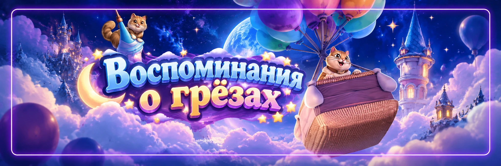

Воспоминания о грёзах
«Воспоминания о грёзах» - мини-игра на поиск спрятанных предметов. Проходим главы, ищем объекты до конца таймера и двигаемся по дороге наград.
Главный принцип: на поздних главах знание карты важнее скорости нажатий.
📚 Главы
В событии последовательно открываются 10 глав. Чем дальше продвигаемся, тем дороже ошибка, поэтому особенно внимательно играем главы 6-10.
🐟 Валюта входа
Для запуска главы используется валюта события. Не начинайте позднюю главу, если вас могут отвлечь или вы не знаете сцену. Провал одного из этапов может заставить проходить текущую главу заново.
⏱️ Главное правило
Поздние главы не открываем «на минутку». Чем выше глава, тем неприятнее повтор.
🔎 Как искать предметы
Не мечемся глазами по всей картинке. Используем один маршрут:
- слева направо;
- сверху вниз;
- затем второй проход по мелким деталям.
Так меньше шансов несколько раз проверять одно место и пропустить другое.
🔍 Что проверять особенно
- углы и края сцены;
- полки, окна и стены;
- снег, верёвки и фонари;
- ящики и мелкий декор;
- предметы, которые сливаются с фоном.
🔔 Колокольчики
Колокольчики лучше не тратить на ранних простых этапах. Самая полезная область для них - поздние главы, где несколько дополнительных секунд могут спасти всю попытку.
Если можно докупить дополнительное время, используйте его только когда до победы действительно осталось немного.
⚡ Экспресс-режим
Экспресс-режим помогает быстрее проходить часть контента, но требует ресурсов. Для F2P он не обязателен. Если спокойно проходите вручную, лучше беречь ценные предметы для сложных моментов.
🗺️ Карты повторяются
Расположение предметов на знакомых сценах обычно повторяется, поэтому каждый новый цикл становится проще. Полезно заранее смотреть карты и запоминать именно те объекты, которые постоянно вызывают проблемы.
📸 Подготовка к поздним главам
Перед 6-10 главами полезно:
- посмотреть готовую карту;
- запомнить несколько самых неприятных предметов;
- при необходимости открыть видео или тренажёр сцены;
- убрать уведомления и освободить несколько минут.
🌍 Странные названия
Иногда перевод названия предмета может сбить с толку. Если объект не находится, смотрите не только на слово, но и на форму предмета и его возможное место на сцене.
👥 Сплочение грёз
После основного прохождения проверяйте совместный режим и ежедневные миссии. В совместной игре выгодно разделить сцену: один игрок смотрит левую часть, второй правую.
🎁 Дорога воспоминаний
Долгосрочный прогресс события сохраняется между возвращениями. F2P не обязан закрывать всю шкалу за один запуск. К крупным наградам можно двигаться постепенно.
💬 Опыт игроков
- Перед 6-10 главами смотрите карту заранее. Там ошибка уже заметно дороже.
- Сохраняйте колокольчики на поздние главы.
- Не начинайте сложную главу, если вас могут отвлечь.
- Ищите предметы всегда одним маршрутом.
- Запоминайте только проблемные объекты. Учить всю сцену сразу не нужно.
- Используйте интерактивные карты и тренажёры. Это дешевле слепых повторов.
- Экспресс удобен, но не обязателен.
- Не гонитесь за финальной наградой за один цикл. Долгосрочный прогресс сохраняется.
🚫 Частые ошибки
- начинать позднюю главу без свободного времени;
- тратить колокольчики на первых лёгких уровнях;
- хаотично нажимать по всей картинке;
- игнорировать готовые карты;
- пытаться выучить сразу все предметы;
- покупать дополнительное время после каждого промаха;
- пытаться закрыть всю долгосрочную шкалу за один цикл.
✅ Быстрая схема
Главное
«Воспоминания о грёзах» выигрываются знанием карт. Чем лучше помним расположение предметов, тем меньше тратим ресурсов на повторы.